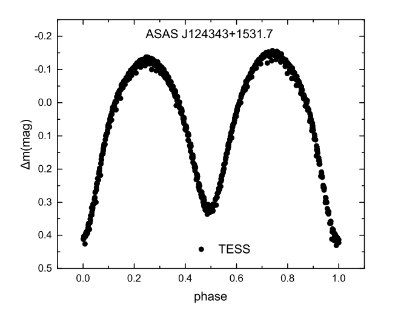
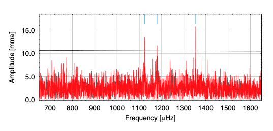
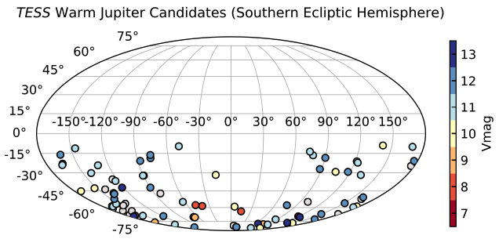

STATUS UPDATE: TICA data for Sector 36 is now available on MAST
Hello TESS followers and welcome to this weeks news bulletin. This week we have three papers from the archive, enjoy!
The first photometric investigation and spectroscopic analysis of two contact binaries: ASAS J124343+1531.7 and LINEAR 2323566 (Xia et, al., 2021):
In this paper the authors examine data for ASAS J124343+1531.7 and LINEAR 2323566, obtaining key system parameters. The multi-color passband CCD light curves were first obtained by the 0.84m Ritchey-Chrétien telescope with follow up observations by the WIYN 0.90m Cassegrain telescope, and additional observations obtained by TESS. Taking all data and passing it through the W-D program the authors were able to obtain the mass ratios and fill-out factors for the systems as 3.758, 1.438 and 31.8%, 14.9%, respectively.
The two systems are both binaries, ASAS J124343+1531.7 is a W-subtype median contact binary, while LINEAR 2323566 is a W-subtype shallow contact binary. The O'Connell effect is indicated in both systems as they have asymmetric light curves. This effect is typically explained by magnetic activity, which was confirmed by the authors when measuring the equivalent widths of the h-alpha lines. The system LINEAR 2323566, was also found to have the strongest magnetic activity.
When examining the orbital period changes the authors found that ASAS J124343+1531.7 seems to have a secular period increase, which can be explained by the transfer of mass from a less massive star to a more massive star. In ASAS J124343+1531.7 the two stars are thought to be in the main sequence. For LINEAR 2323566 however, the more massive star is a main sequence star, while the less massive star has evolved out of the main sequence and is over-luminous and over-sized.
Exploring the pulsational properties of two ZZ Ceti stars (Bognár et. al., 2021):
A ZZ Ceti star is a type of pulsating white dwarf variable. The luminosity variation is thought to be caused by non-radial gravity wave pulsations within the white dwarf itself. In this paper the authors continue their ground-based observing project with season long observations of these unique variables using the Konkoly Observatory.
Targets observed include PM J22299+3024 and LP 119-10, which was also observed by TESS with a 120 second cadence. Using standard Fourier analysis of the data sets (in addition to test data) and asteroseismic fits, the authors derived six possible pulsation modes for PM J22299+3024, and five plus two TESS pulsation frequencies for LP 119-10.
The asteroseismic fits of PM J22299+3024 gave an effective temperature of 11,400 K and a stellar mass of 0.46 MSun. This temperated is roughly 800 K higher than the values derived by spectroscopy, but the mass has remained the same.
For LP 119-10 the effective temperature is between 11,800 - 11,900 K, and the stellar mass is 0.7 MSun. This temperature is once again higher than that assumed from spectroscopy (11,290 K), and the mass is relatively similar 0.65 MSun.
The seismic distances of the authors best-fitting model stars agree with the Gaia astrometric distances of PM J22299+3024 and LP 119-10, within errors.
Warm Jupiters in TESS Full-Frame Images: A Catalog and Observed Eccentricity Distribution for Year 1 (Dong et. al., 2021):
A warm Jupiter is defined here as a planet that is larger than six Earth radii with an orbital period between 8-200 days. These planets are important as we still don't fully understand how they form, with different origin channels having mean different expectations for a warm Jupiters' properties. Evaluating the overall properties of warm Jupiters' however is difficult because of the small sample size.
In this paper the authors take advantage of TESS year 1 prime mission FFI data, systematically searching for candidates around main sequence host stars that are brighter than 12th magnitude. A catalog of 55 warm Jupiter candidates are introduced, including 19 candidates that were not originally released as TESS Objects of Interest. The authors fit these light curves and then characterize their eccentricities and transit-timing variations (TTVs). After evaluation a list was then created which prioritized those more suitable for ground-based follow-up and via the TESS Extended Mission.
The authors then used hierarchical Bayesian modeling to find the preliminary eccentricity distributions of their warm Jupiter sample using Beta distribution. See the paper for more details.

Fig. 1: Taken Xia et. al., (2021).The TESS light curves of ASAS J124343+1531.7 observed from March 21, 2020 to April 15, 2020 and represented by phase.

Fig. 2: Taken from Bognár et. al., (2021). Fourier transform of the LP 119-10 TESS light curve. The authors marked the frequencies listed in Table 7 of the paper, with blue lines. The black line denotes the 4 S/N significance level

Fig. 3: Taken from Dong et. al., (2021). Warm Jupiter candidates discovered in Year 1 TESS Full-Frame Images around main-sequence host stars brighter than TESS-band magnitude of 12. The candidates are plotted in ecliptic coordinates (λ, β), where λ is the ecliptic longitude and β is the ecliptic latitude. The 55 candidates with well-constrained parameters, along with 11 candidates with well-fitted light curves but undetermined orbital periods and/or missing stellar parameters, are colored in their V-band magnitudes. The 19 possible candidates with unconstrained impact parameters and radii are colored in grey. Most of the targets are bright enough for ground-based follow-up observations.